成都，一座来了就不想离开的城市。这里既有“窗含西岭千秋雪”的千年诗意，也有“烟火人间三千年”的市井温情。作为古蜀文明的重要发源地，成都拥有武侯祠、杜甫草堂、金沙遗址等文化瑰宝，每一处都诉说着时光的故事。漫步宽窄巷子，青砖黛瓦间飘来盖碗茶的清香；走进锦里，红灯笼下是糖画与川剧变脸的热闹。而城市另一端，太古里的摩登光影与金融城双塔的璀璨灯火，又彰显着新一线城市的活力。当然，最令人心动的还是那群憨态可掬的大熊猫，在繁育基地里悠闲地啃着竹子，治愈着每一位旅人。成都的美食更是一绝——麻辣鲜香的火锅、串串香、担担面、钟水饺……舌尖上的滋味让人流连忘返。这里的生活节奏不紧不慢，茶馆里摆龙门阵的市民、公园里打太极的老人、绿道上骑行的年轻人，共同勾勒出“慢生活”的幸福图景。蜀韵成都，既古老又年轻，既悠闲又进取，正以包容的姿态迎接世界。